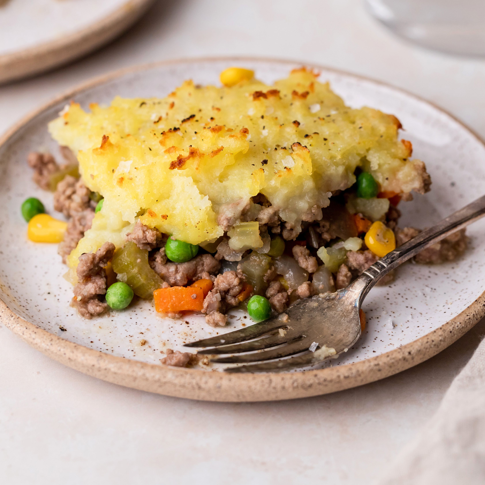

Shepherd's pie, cottage pie, or in its French version hachis Parmentier is a savoury dish of cooked minced meat topped with mashed potato and baked. The meat used may be either previously cooked or freshly minced. The usual meats are bee